Discriminating IBD using Biopsy Transcriptomes
Argmann et al performed RNAseq on a mucosal biopsies and blood from a large cohort of IBD and non-IBD controls. Their primary goal was to construct a “molecular inflammation” score that correlates with established measurements of inflammation. For reasons outlined below, I was unable to validate this analysis.
Their publicly available dataset enables testing other hypotheses using machine learning.
Below, we process the dataset and apply machine learning to solve two tasks.
Predict IBD in inflamed and non-inflamed rectum biopsy samples
Predict IBD in non-inflamed rectum and ileum biopsy samples using an ensemble model.
Re-analyzing the data
Loading data
First, let’s check the total number of samples and features:
## [1] "39376 samples by 2472 features"Next, we will assign gene names to transcripts. Not all transcripts can be annotated, so we will remove them. This is not necessarily the optimal decision for the purpose of building the most accurate classifier, but it helps render interpretability.
## [1] "2471 features remain"Prevalence filtering
Next, we’ll remove features that are present in 3 samples or fewer.
## [1] "Removed: 84 features"This removed a relatively small number of features.
Distribution check
Lastly, we’ll check the distributions of the data to ensure they are approximately normally distributed prior to visualizing with PCA. Let’s randomly select 50 genes to get a sense of the distributions:
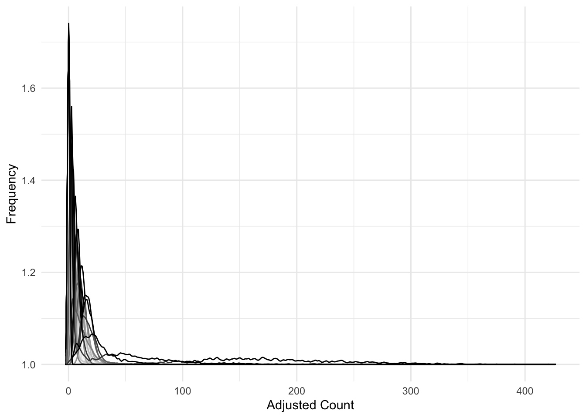
These data appear severely right-skewed.
Log-transformation
Let’s apply a log-transform (with pseudocount).
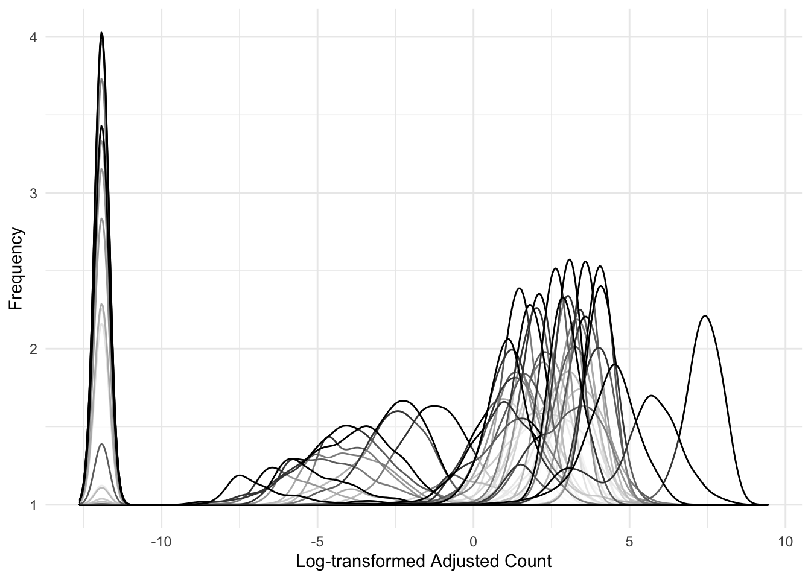
These look significantly more normally-distributed than before.
We have finished pre-processing our data. Here are what the first 4 rows and columns look like:
## MIR6859.1 MIR1302.2 FAM138A OR4F5
## GSM5976499 4.577142 -11.91504 -11.91504 -11.91504
## GSM5976500 3.094787 -11.91504 -11.91504 -11.91504
## GSM5976501 5.369126 -11.91504 -11.91504 -11.91504
## GSM5976502 3.234541 -11.91504 -11.91504 -11.91504## disease sample count
## 1 CD 498
## 2 Control 243
## 3 UC 421Principal Component Analysis
Now let’s visualize how the samples relate to each other after dimension reduction (using PCA):
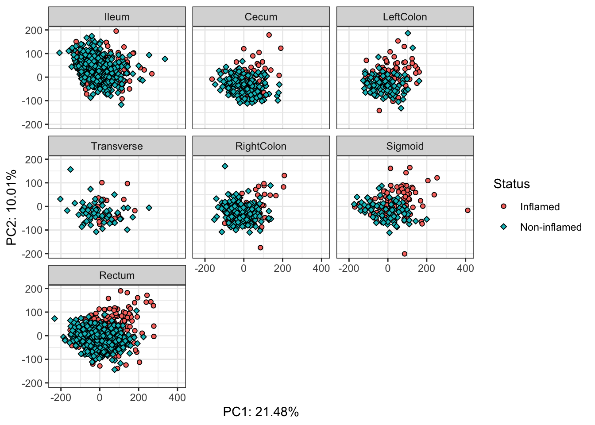
The separation by location doesn’t look great. Nonetheless, we’re going to subset the data to one compartment to simplify the problem. Which compartment has the greatest number of samples with good representation among conditions?
## Location Status Disease Samples Samples per Location Samples per Location per Disease
## 1 Rectum I CD 116 903 368
## 2 Rectum NonI CD 252 903 368
## 3 Rectum I Control 0 903 224
## 4 Rectum NonI Control 224 903 224
## 5 Rectum I UC 144 903 311
## 6 Rectum NonI UC 167 903 311
## Samples Per Location per Disease per Status
## 1 116
## 2 252
## 3 0
## 4 224
## 5 144
## 6 167We can see that the rectum compartment has the most samples overall, with high representation per disease and status.
This makes biological sense. The rectum may be inflamed in CD or UC, but the ileum is rarely affected in UC.
Subset to rectum
Let’s subset the data to the rectum and apply PCA again, and take only one sample per patient.
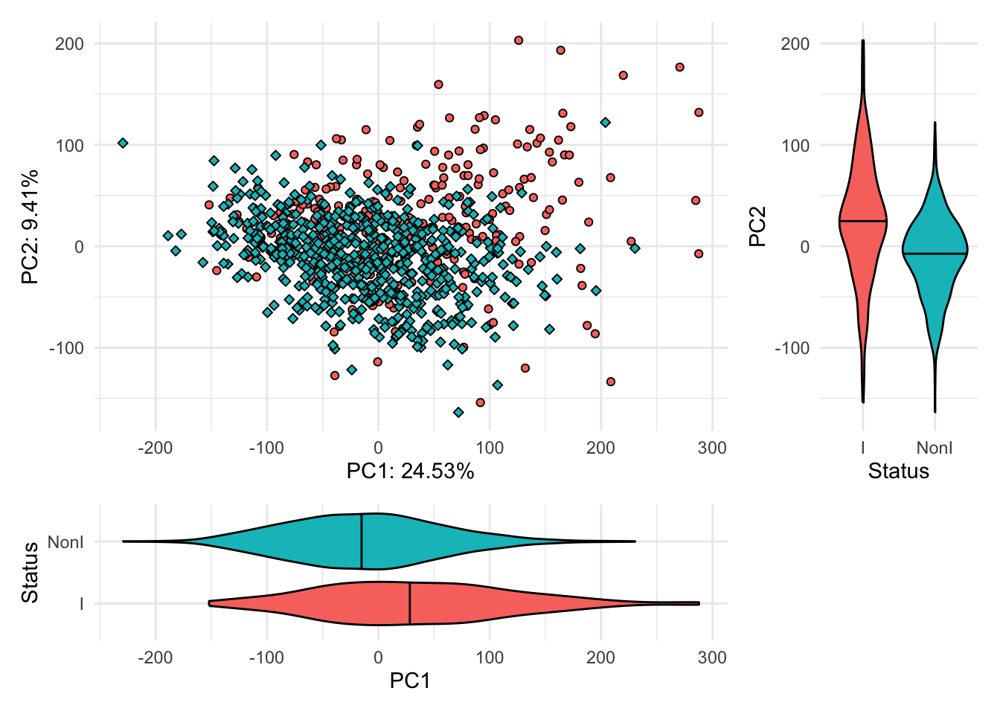
PCA of rectum biopsies shows good separation based on whether the tissue was inflamed or not.
Now we can start asking questions about whether the transcriptome can diagnose inflammation or discriminate disease.
I personally think predicting inflammation is not a useful application of machine learning (bordering on tautological), because a clinician will be able to determine whether a tissue is (endoscopically) inflamed while sampling it. Nonetheless, it poses a straightforward task for machine learning.
Molecular Inflammation Score
Before launching into machine learning, I wanted to comment on what the authors advanced in their study.
They used linear mixed effects regression to identify genes upregulated in inflamed samples, followed by GSVA to calculate a single score per sample, called the Molecular Inflammation Score.
In their model, they controlled for batch, RNA integrity number, rRNA rate, exonic rate, age, gender, and genetic principal components. However, these are data that are not readily available from GEO.
So, we will move on to applying machine learning instead.
Predicting IBD
For the sake of running this analysis locally, we’re going to drastically reduce the number of features used as predictive variables.
Variance filter
Feature selection is an important step in pre-processing data prior to training a model. We have a decently-sized dataset, but I prefer not spending samples performing supervised feature selection (e.g. running t-tests to extract features we suspect to be associated with the outcome). Instead, we’ll apply unsupervised feature selection by removing low variance and highly correlated features.
First, let’s use caret’s build in “nearZeroVar” function. From the documentation, this function removes features with: one unique value (i.e. are zero variance predictors) or predictors that are have both of the following characteristics: they have very few unique values relative to the number of samples and the ratio of the frequency of the most common value to the frequency of the second most common value is large.
## [1] "Removed: 3050 features (12.35%)"Train model
Now, we’ll use all rectum biopsies to predict Control from IBD (CD or UC)
We will first use glmnet to establish a proof-of-principle that this prediction can be made. Because we have a good sample size, we’ll rebalance the dataset during CV by randomly downsampling to the smallest class.
##
## Control IBD
## 221 660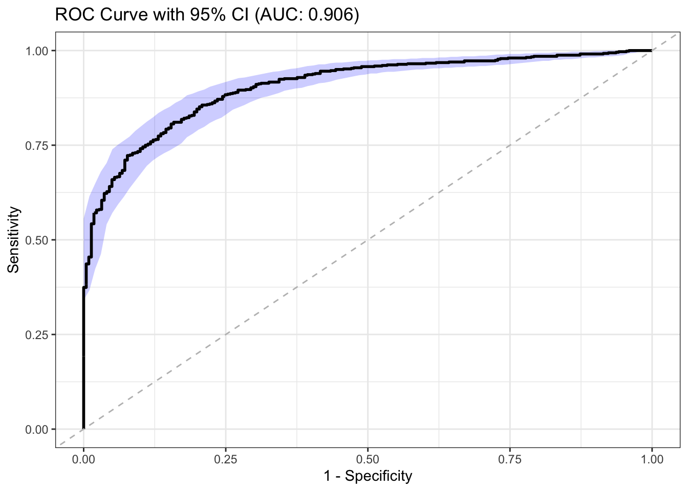
Even after aggressive feature selection and downsampling, elastic net can predict IBD from controls with an AUC of 0.906. Quite an impressive looking ROC, albeit for internal validation.
Questioning the utility
I stated before that I don’t consider this a very useful problem to solve. The clinician can make a determination of IBD or not well enough. In fact, I suspect that the high AUC is leveraging the fact that inflammation (visible on endoscopy) is represented by a highly discriminative transcriptomic signature alone, and this model would fail in discriminating IBD in non-inflamed samples. Let’s explore this suspicion.
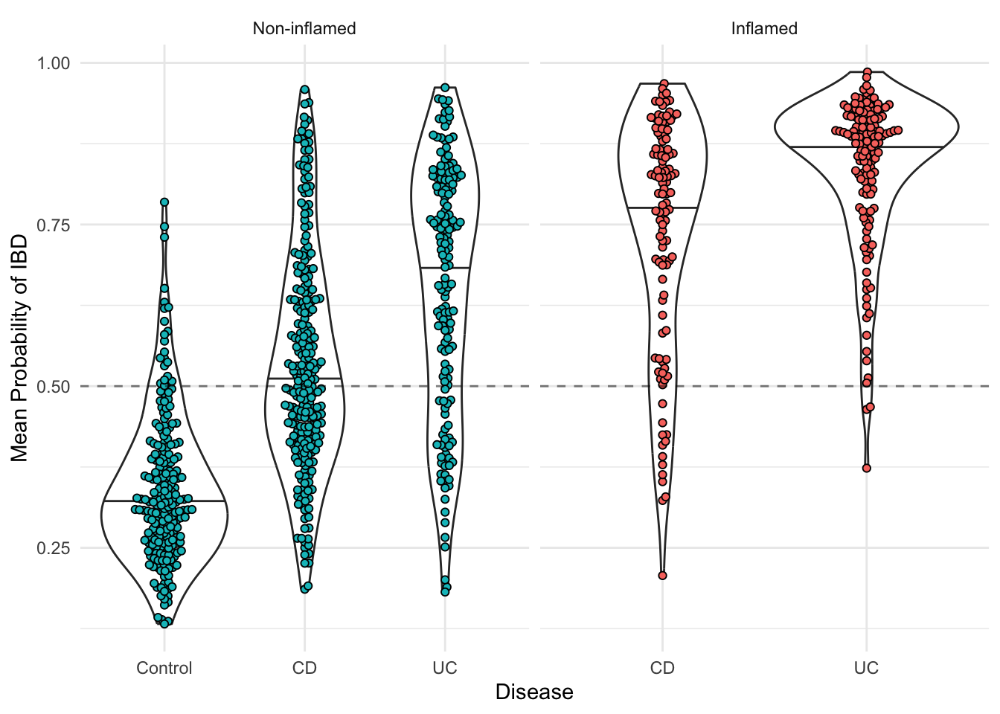
Here, it is evident that the model is most discriminative if the tissue is inflamed. There does appear to be a signal in the non-inflamed UC rectum, but less so for CD.
Predicting IBD with non-inflamed transcriptomes
We also have ileum data, which is more specific for CD. Since the rectum should be more specific to UC, a hypothesis can be raised that I have not seen tested before:
Could an ensemble of 2 machine learning models (one trained on the rectum and one trained on the ileum) diagnose IBD from controls in the absence of inflammation ?
To review, we’ve limited the dataset patients with matching ileum and rectum samples. We’ve removed pseudoreplicates, such that each patient is only represented once. Lastly, we’ve filtered out low variance and highly correlated (R > 0.70) features.
Now we can continue on to building the ensemble. We’ll build separate classifiers: one for predicting IBD in ileum samples, and one for predicting IBD in rectum samples.
Of note: we will need a consistent CV scheme that both models will use. Because we are also downsampling, we will pull out the CV scheme from the first model and apply it to the second (and ensemble).
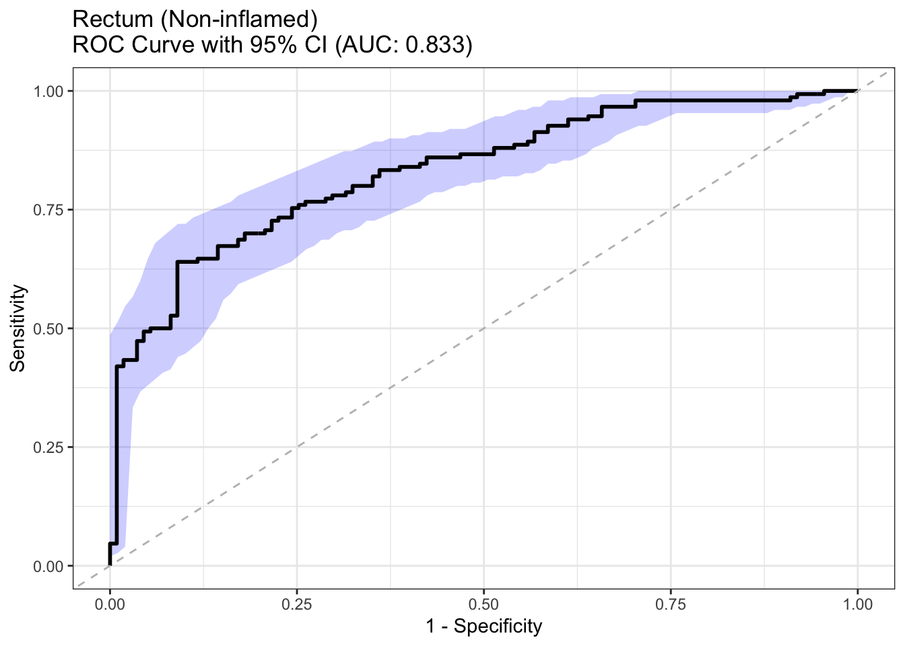
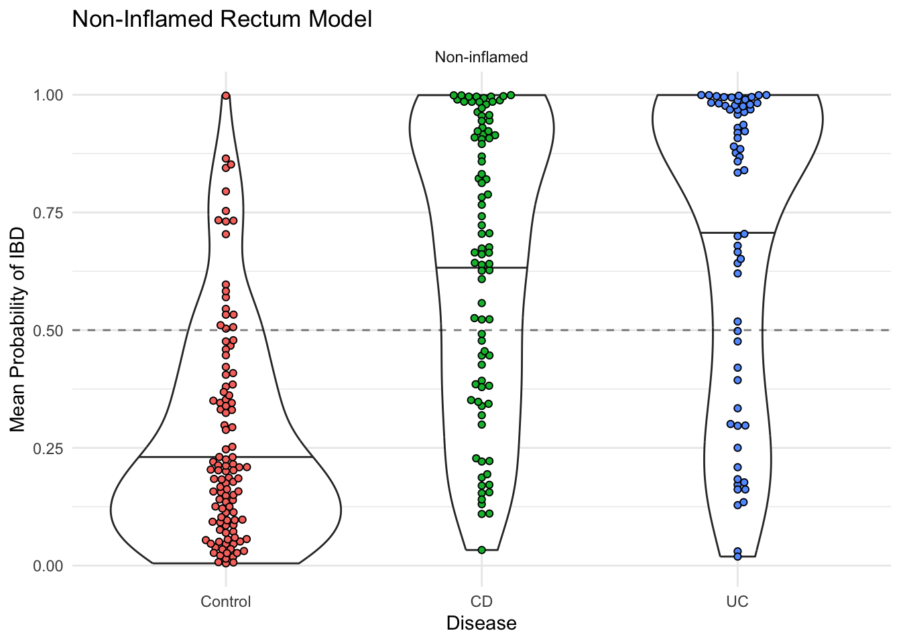
This rectum-only model is doing what we want it to: predict CD or UC from non-inflamed rectal tissues.
Since inflammation in rectal tissue is not specific to CD or UC, we’ll build a similar classifier using ileum samples.
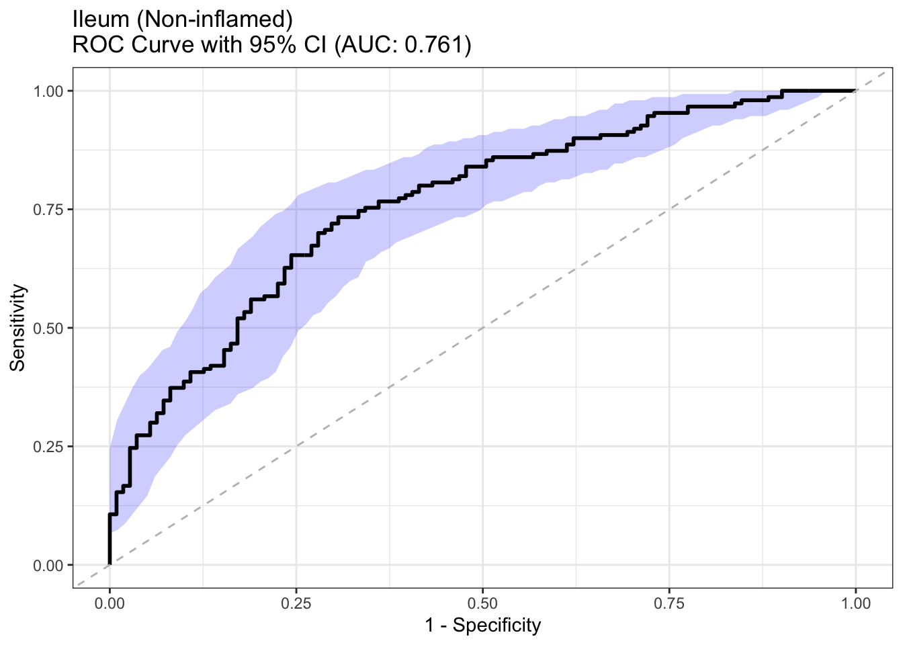
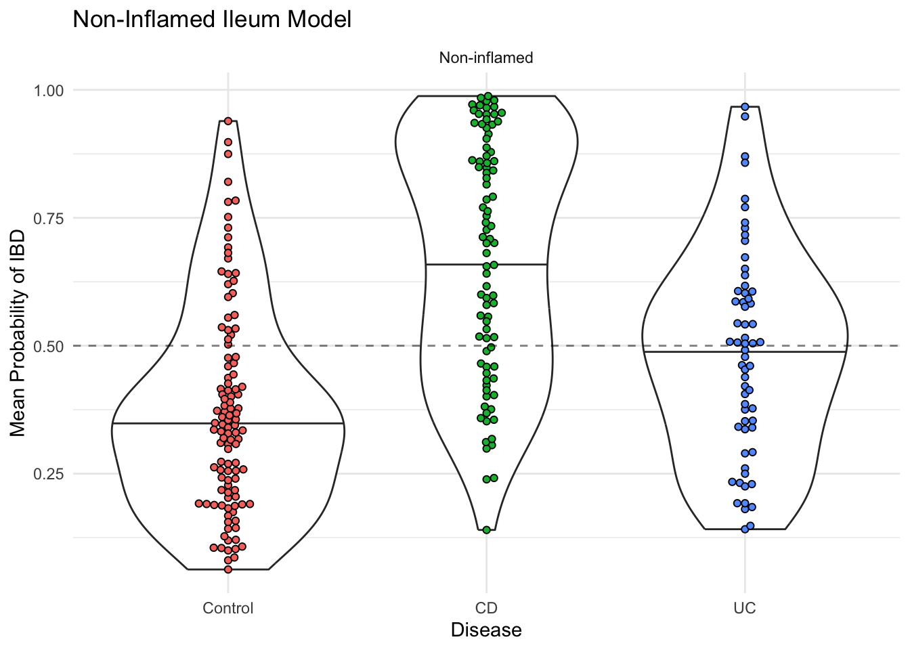
This ileum-only model appears to perform better at predicting CD, which makes sense because inflammation in ileal tissue is generally specific to CD.
Now, let’s build an ensemble model using a caret extension.
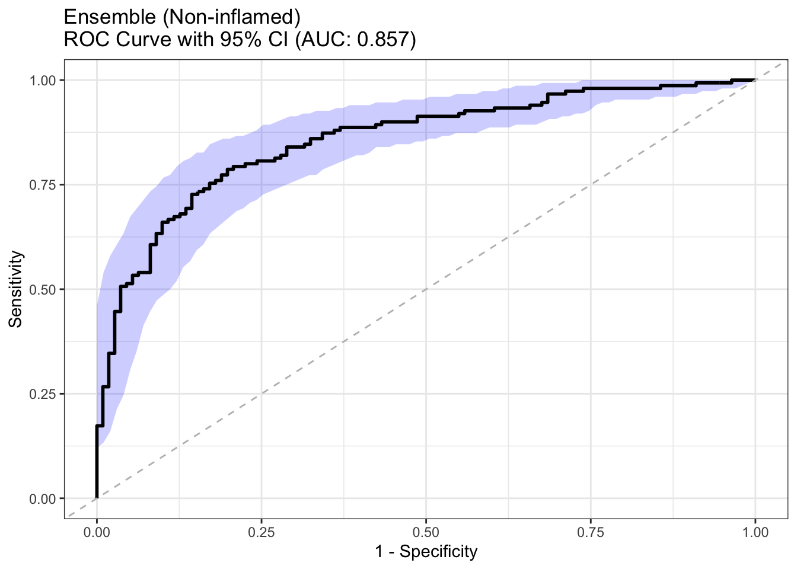
Does this classifier work more equally for CD and UC?
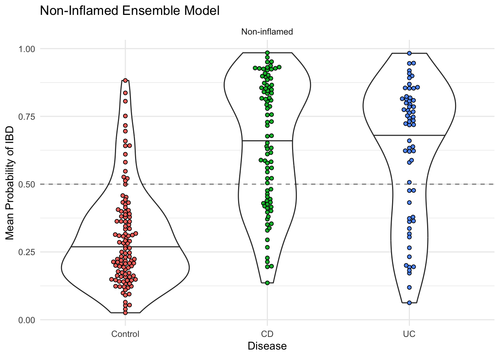
We see the model is near equally sensitive for CD and UC. In other words, it’s doing what we wanted this sort of ensemble to do.
Conclusions
There are several reasons why the transcriptome of non-inflamed intestinal biopsies could be different between IBD and non-IBD controls.
For instance, IBD is treated with immunomodulatory drugs, which can leave a transcriptomic footprint in the tissue, inflamed or not.
Or, longstanding IBD in remission may have a persistent transcriptomic signature (including what the authors call “molecular inflammation”), despite already having been diagnosed and treated in the past.
Therefore, there is limited utility in this particular model without having included new-onset, treatment-naive patients.